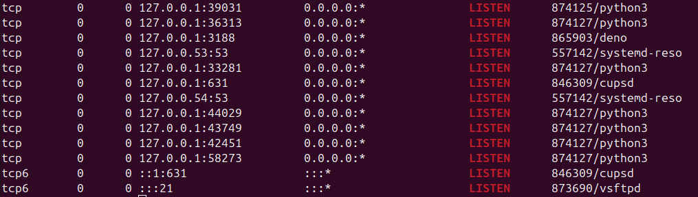

In the last lecture, you covered different ways that someone might set up and take advantage of a Covert Channel. In the last lab, you set up one such Storage covert channel using the file permissions of an FTP server.
In this lab, we shall set up a Timing Covert Channel. We will set up a server that will transmit text overtly, but transmit a covert message hidden in the timings between each successive character of the overt message.
As an example, a delay of 0.025s between parts of the message could be translated to a 0 while a delay of 0.1s can be translated as a 1.
In order to transfer a long covert message, we will need a much longer overt message. Using the suggestion above, transmitting a single covert character (7 or 8 bits) would require the transmission of 8 or 9 characters. As mentioned earlier, this isn’t too unreasonable because Covert channels are typically low bandwidth (i.e. can only realistically send small messages).
To end the message we have a couple of options to consider. We could just repeat the covert message over and over and trust the recipient to know when they have received the entire message. However, this would make our channel easy to notice and analyse. A more surreptitious option would be to add a special tag at the end of our covert message to signify that the hidden message has been received in its entirety…perhaps the string “EOF”
1 Setting up the server
Let’s create a basic TCP server using python’s socket library.
import socket
# define a host and a port
HOST = "127.0.0.1" # This is the ip address for a local host
PORT = 1337 # Choose a port number that is not typically
# used by other traffic.
# Now to create a Socket object and connect it to the specific host and
# port identified by our constants above
s = socket.socket(socket.AF_INET, socket.SOCK_STREAM)
s. bind((HOST, PORT))
s.listen(0) # the argument determines how many connection requests
# will be added to the queue. 0 means that it will not
# add any new request to the queue and will reject any
# incoming requests if it is already dealing with one.
print(f"Server is listening on {HOST}:{PORT}")
while True:
# Note that if you wanted your server to be able to deal with more
# than one client at a time, this portion would be threaded. For our
# demonstration, you won't need to create a threaded server.
c, addr = s.accept() # store client details when connection
# comes in. "c" is the client socket,
# and "addr" is the client address.
print(f"Connection from {addr} established")
# the b in the sendall command below ensures that the message is
# sent as bytes, which is the form that sendall requires.
c.sendall(b"Hello from the other side. I must have called a thousand times")
# make sure to close the connection
c.close()
If you haven’t done any socket programming before, this is a good place to stop and test your server. Its always fun to see how your code could work over a network.
Later on in this lab, we’ll design a programmatic client that will connect to our server. But you don’t need one for now. You can use in built tools in the terminal that allow you to connect to a client/port.
- Using telnet
telnet 127.0.0.1 1337 # general form is telnet server_ip server_portTelnet is used for plain text communication and is unencrypted so don’t use it for sensitive data.
- Using netcat
nc 127.0.0.1 1337Hit Ctrl + C or type exit to exit. Netcat is used to test and debug network services.
The code above is a very simple server example. We need to tweak it to send one character at a time with a delay between each character where the delay is actually our covert channel.
In order to do this, we shall have to make a couple of changes to our code above starting with importing the sleep command from the time library.
from time import sleepTo make our code easier to adjust, we should probably put some time constants at the top of our code too.
ZERO = 0.025 # How long to wait for a zero
ONE = 0.1 # How long to wait for a oneOur algorithm for sending the message is also going to change a little bit. Instead of using sendall, we shall use send which allows us to send smaller chunks of the message.
Our loop for sending the cover
and then create a socket object that we can then bind to a specific port. That means that it will be listening to that port and will be required to do something when a connection comes in on that port.
s = socket.socket(socket.AF_INET, socket.SOCK_STREAM)
port = 1337 # choose a port number that should typically be available
s.bind(("", port))
:::{.callout-tip}
Depending on how far you went with a previous lab, you might not need to
do the `Setting up an FTP server` section at all.
:::
## Installation
We shall be using vsftpd (Very Secure FTP Daemon). To do that run the
following commands in the terminal
```sh
sudo apt update # to update your software listings
sudo apt install vsftpd # to actually install vsftpdOnce the installation is done, you should be able to confirm that it is installed and running correctly with the following command.
sudo netstat -alpn | grep ' LISTEN 'if the netstat command above doesn’t work, you might need to install it using the command
sudo apt install net-toolsOnce installed, re-run the netstat | grep command from earlier.
The command above should produce a list of services that are running on your Linux machine. One of the lines in that list should have vsftpd in it. Below is a screenshot showing what the line above produces on my system.

1.1 Login
Now try logging in to your ftp server from the same computer/system.
ftp localhostRunning the command above should allow you to log in to your own system using the username and password of your system. Feel free to navigate and see what you have access to.
Some commands that might be of help to you include:
ls
ls -lh
cd foldername
cd ..
Ctrl + D1.2 Tweaking the FTP server
We can make some few modifications to make it a better experience. These modifications include adjusting the welcome message, and adjusting the folder that an ftp user is automatically sent to.
sudo vim /etc/vsftpd.conf # feel free to use another editor other than vimWhen inside the config file, look for and adjust the following lines accordingly.
anonymous_enable=YES
local_enable=NO
ftpd_banner=My first and Best FTP server # feel free to adjust this
anon_root=*** # where *** is the path to an appropriate folder with
# appropriate permissions. A suggestion is /home/ftp which you
# will need to create if it doesn't already exist.1.3 Restart the FTP server
Restart the server and log in again. This time, you don’t need to use your system’s credentials to log in. You should be able to log in anonymously. That means your username is anonymous and your password is blank i.e. just hit Enter
sudo service vsftpd restart
ftp localhostYou can also try to ftp into your ftp server from another computer. All you’ll need is the ip address of the computer on which the ftp server is located.
If you set up this server on a virtual machine and set up the network correctly, then your virtual machine will have a different IP address from your host computer and you can do this part from your host computer.
ftp 138.47.something.something # recall you are running this command on your
# host computer but using the ip address of your virtual machine (or
# whatever computer the server is on)2 Storage Covert Channel
We are now going to use the ftp server as a Storage covert channel. More specifically, we shall use the permissions of the files on that server as a way of hiding a message.
Note that the permissions are typically made up of 10 characters that could either be a letter [drwxl] or a dash [-]. We could take the presence of any letter to be a 1 and its absence to be a 0. This allows us 10 bits of information for each file.
There are two ways we could use these 10 bits
2.1 7 bits
We could ignore the first three bits and only embed ASCII letters with the latter 7 bits of each file’s permissions.
---xrwxrwxThe file permission above would be translated to 1111111.
Unfortunately, a list of files where the first 3 bits of file permissions were consistently not being used would rouse too much suspicion. So in order to make it look more convincing/surreptitious, we could add random files as noise into the file list. These “noise” files would have to have at least one of their first 3 bits set so that they could be differentiated from the actual hidden message.
Here is an example of what we’re trying to do.
Suppose we have the message Demigod that we want to embed.
First we break it down into its ASCII representation.
D = 68 = 1000100
e = 101 = 1100101
m = 109 = 1101101
i = 105 = 1101001
g = 103 = 1100111
o = 111 = 1101111
d = 100 = 1100100File permissions are made up of three categories of flags that determine whether three user categories (user, group, other) can read, write, or execute the associated file respectively.
If we are going to embed our message into these 9 bits, we will have to change our message bits from 7 to 9 bits by prepending 2 bits to each character’s representation.
D = 001 000 100
e = 001 100 101
m = 001 101 101
i = 001 101 001
g = 001 100 111
o = 001 101 111
d = 001 100 100Conveniently, it is possible to quickly set the permissions of a file to a 9 bit pattern. All one needs is the decimal equivalent of each 3 bit grouping. This will end up with each 3 bit pattern being replaced with a number in the range [0,7] i.e. the smallest 3 bit number - 000 to the largest 3 bit number - 111.
D = 104
e = 145
m = 155
i = 151
g = 147
o = 157
d = 144We shall now create a bunch of random files (with the touch command), and adjust their permissions (with the chmod command) using the numbers identified above.
touch file1
chmod 104 file1
touch file2
chmod 145 file2
touch file3
chmod 155 file3
touch file4
chmod 151 file4
touch file5
chmod 147 file5
touch file6
chmod 157 file6
touch file7
chmod 144 file7This should produce something like this in your folder.
---x---r-- 1 prof prof 0 Mar 27 16:15 file1*
---xr--r-x 1 prof prof 0 Mar 27 16:15 file2*
---xr-xr-x 1 prof prof 0 Mar 27 16:15 file3*
---xr-x--x 1 prof prof 0 Mar 27 16:15 file4*
---xr--rwx 1 prof prof 0 Mar 27 16:15 file5*
---xr-xrwx 1 prof prof 0 Mar 27 16:15 file6*
---xr--r-- 1 prof prof 0 Mar 27 16:15 file7*Like we mentioned before, note that all the files that actually have something in their permissions do not have any of the first 3 flags set.
We should now add some noise to the files, making sure that every file that is termed as noise has at least one of the first 3 flags set. This will make our file server contents look more believable.
---x---r-- 1 prof prof 0 Mar 27 16:15 file1*
d--xrw-r-- 1 prof prof 0 Mar 27 16:15 file1.5*
---xr--r-x 1 prof prof 0 Mar 27 16:15 file2*
---xr-xr-x 1 prof prof 0 Mar 27 16:15 file3*
-r-xrwxrwx 1 prof prof 0 Mar 27 16:15 file3.5*
---xr-x--x 1 prof prof 0 Mar 27 16:15 file4*
---xr--rwx 1 prof prof 0 Mar 27 16:15 file5*
-rwx--xr-x 1 prof prof 0 Mar 27 16:15 file5.5*
---xr-xrwx 1 prof prof 0 Mar 27 16:15 file6*
-rw-r---wx 1 prof prof 0 Mar 27 16:15 file6.5*
---xr--r-- 1 prof prof 0 Mar 27 16:15 file7*
drwxr-xrw- 1 prof prof 0 Mar 27 16:15 file7.5*SUCCESS. Covert channel has been set up and hidden message has been embedded.
How would we go about retrieving the message?
---x---r-- 1 prof prof 0 Mar 27 16:15 file1*
0001000100 = 68 = D
d--x---r-- 1 prof prof 0 Mar 27 16:15 file1.5*
1001000100 = ignored
---xr--r-x 1 prof prof 0 Mar 27 16:15 file2*
0001100101 = 101 = e
...and so on...2.2 10 bits
One criticism of the covert channel above is that we are wasting 30% of the bits available to us. With just a small tweak to our algorithm, it is possible to use all the 10 bits in the file permissions instead of just 7.
There are a few implications we need to know though chief of which is that we can no longer afford to include noise files. This is because there is no way to differentiate the noise files from the files that have legitimate portions of the message embedded in their permissions.
To create the message, we’ll need to 1. order the files in the server alphabetically, 2. Create a complete message by appending all the bits of the hidden message together, and then splitting them into groups of 10. Each 10 bit grouping will be applied to a single file. 3. If the message we are trying to embed isn’t made up of a perfect multiple of 10bits, then we pad the message with extra 0’s. 4. During the decoding process, we should collect all the bits into a single stream, split them into groups of 7s (since we are using basic ASCII), and then convert each group of 7 into its associated character, and then reassemble the message.
try to decode the following
d---r--rwx 2 prof prof 4K Mar 27 20:57 0fd1b45f22e18b3
-r-xrw--w- 1 prof prof 0 Mar 27 20:57 17c455d90e49
-rw--w-r-x 1 prof prof 0 Mar 27 20:57 302289542768697c
-rw---x--- 1 prof prof 0 Mar 27 20:57 4bdf419390d83b860cec
--wxr-xrwx 1 prof prof 0 Mar 27 20:57 51451ddb647ff3566601f232
d-w---xr-- 2 prof prof 4K Mar 27 20:57 6e8dd5f0924ce30b35aeaed9
d-wxrw--w- 2 prof prof 4K Mar 27 20:57 70a8cbb30
dr--r-x-w- 2 prof prof 4K Mar 27 20:57 79bf30d265cbd436079e
-rwxrwx--x 1 prof prof 0 Mar 27 20:57 81052541de641ff1ed7ca40
d-w-----wx 2 prof prof 4K Mar 27 20:57 a8b18ffb171e161c753ab8d
-rw-rwxrw- 1 prof prof 0 Mar 27 20:57 c52eda933ff95be8f914eaf62
-r-x-----x 1 prof prof 0 Mar 27 20:57 daf9509999adb4f6e6b49c7e91
d---rwxr-- 2 prof prof 4K Mar 27 20:57 f35c8e8ed0fb8a609
--wxrw--w- 1 prof prof 0 Mar 27 20:57 f4ed4ab4e61c850de968
-rwxrwx-w- 1 prof prof 0 Mar 27 20:57 f59a77545fe6d10
---x------ 1 prof prof 0 Mar 27 20:57 fce47615d2The first file
d---r--rwx 2 prof prof 4K Mar 27 20:57 0fd1b45f22e18b3decodes to 0101110010
The second file
-r-xrw--w- 1 prof prof 0 Mar 27 20:57 17c455d90e49decodes to 0101110010
We keep on going till we get all the bits
100010011101011100100110010101011000100000111011111010001100
101111001011001010100111111001101000001101101111100101000001
1000111100001111001001111110100001000000We then group them into 7s and convert each group into its own ASCII character.
1000100 1110101 1100100 1100101 0101100 0100000 1110111 1101000
D u d e , [space] w h
1100101 1110010 1100101 0100111 1110011 0100000 1101101 1111001
e r e ' s [space] m y
0100000 1100011 1100001 1110010 0111111 0100001 000000
[space] c a r ? ! [ignored]which produces the message Dude, where’s my car?!